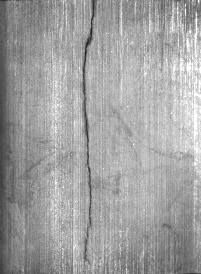

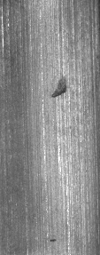
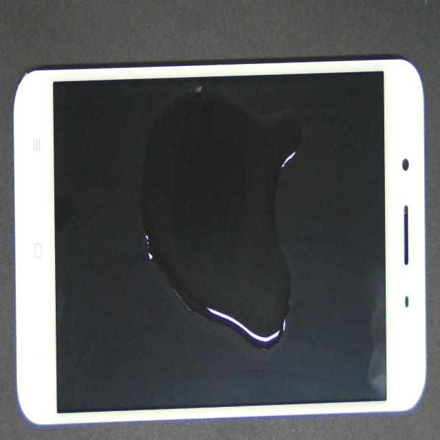
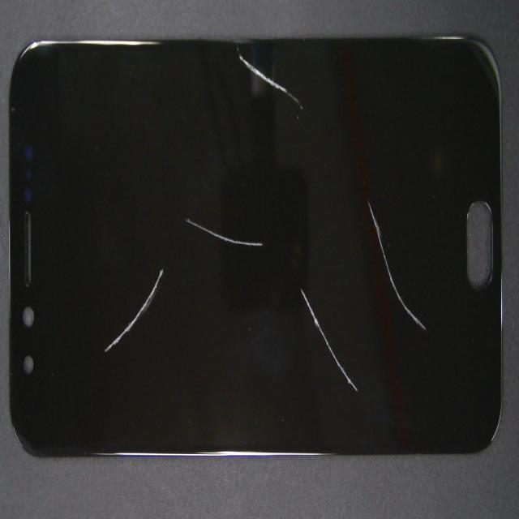
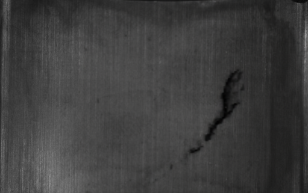
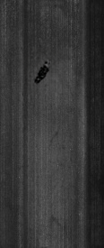
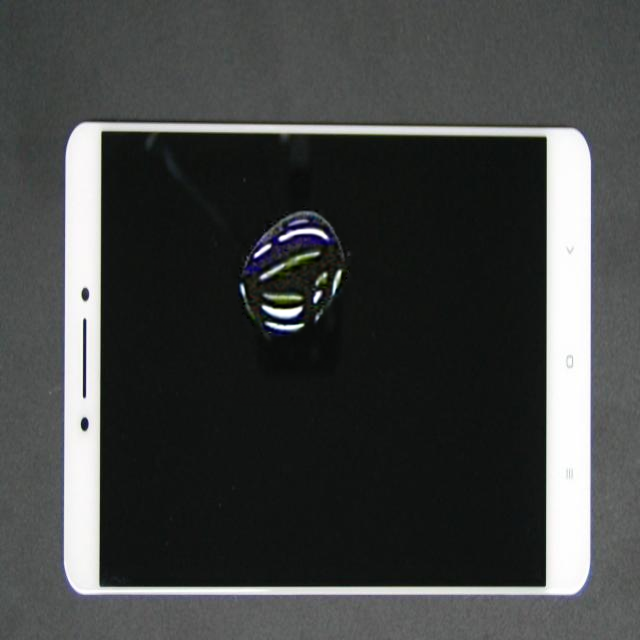
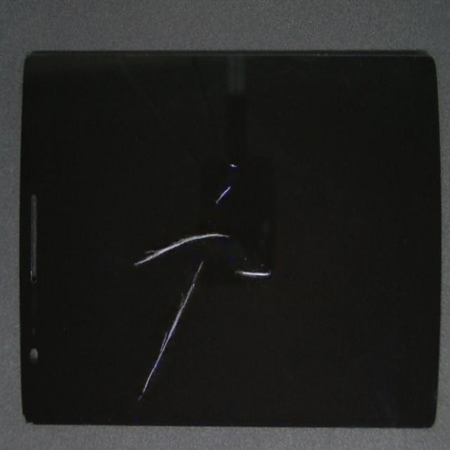
6-node cluster: GPU passthrough, node_group scheduling, no-auth dev gateway. Two Helm charts, values in-repo.
Disk-native on the host's 1 TB volume. Survives reboots; sustains 80 GB multipart uploads at 60–300 MB/s.
Metal-surface Day 1 (manual ROI) via NVIDIA's DIG skill — 5 defect classes, pretrained passthrough.
Every image ships with mask, crop, annotated overlay, SDG_result.csv and DAFT-v3 artifacts.
PROGRESS.md: every failure signature root-caused — OOM retry loops, bucket loss on reboot, token auth failures, multipart upload errors.
RF-DETR Large finetuned locally on the metal & glass outputs — 0.85 / 0.97 mAP@50 on held-out backgrounds. PCBA next; cookbooks already in the skill.
osmo — data + logs + artifactsdefaultosmo CLI → gateway
operator → compute node
pod_template80.6 G pretrained + data
~22 min · MinIOAnomalyGen 2B inference
~8 min · GPUmasks · crops · DAFT v3
runs/<name>/anomaly
~5 s upload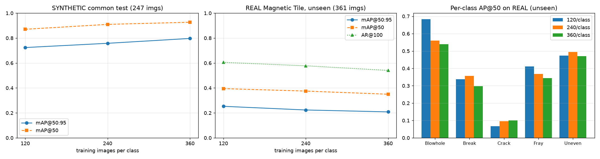
386 real Magnetic Tile photos. Recall holds (AR ~0.6) but precision and box quality drop. Crack transfers worst (0.07–0.10 AP@50) — real hairline cracks differ from the synthetic renders. Both background and defect are synthetic here.
300 real mobile-screen photos. Oil transfers well: 0.949 AP@50 real. Scratch and stain are detected but boxed loosely — real elongated scratches differ from the synthetic point-defect shapes.
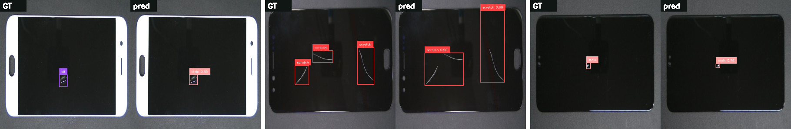
Roboflow's real-time DETR (ICLR 2026): DINOv2 backbone, 33.9 M params, 704×704. Largest Apache-2.0-licensed variant — XL/2XL are PML 1.0.
DIG emits pixel masks, not boxes. Connected components on original_mask → COCO bboxes; class from the filename. No manual annotation needed.
All images derive from just 20 base backgrounds (20–45 variants each). Splits are grouped by base image — test backgrounds are never seen in training.
Metal: 629 imgs, 5 classes (Blowhole, Break, Crack, Fray, Uneven). Glass: 900 phone-screen imgs, 3 classes (oil, scratch, stain), perfectly balanced.
Batch 16 @ 704², EMA, early stopping. ~10 min per model on the same RTX PRO 6000 (peak 26 GiB) — the GPU that generated the data also trains on it.
mAP@50 / @50:95 overall & per class on the held-out split, confusion matrix, latency benchmark. Valid→test gap stays within a few points.
No cross-class confusion: oil 1.00 AP@50 (45/45), scratch & stain 0.95. All 9 errors are missed small defects or loose boxes on faint thin scratches — none are a wrong class.
Blowhole/Fray/Uneven at 0.92–0.93 AP@50, but MT_Break 0.67 — low-contrast smudges: 8/26 missed, most false positives. It also had only 2 valid-split samples; more Break data is the fix.
num_sdg — the fixed input pull amortizes, so big batches are cheap per image.use_pretrained_checkpoint=false) — the single GPU holds the job for its duration.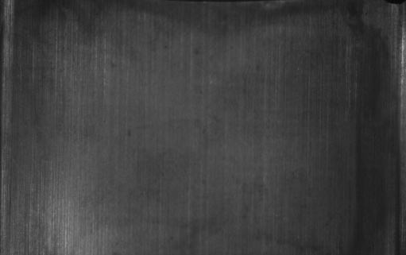
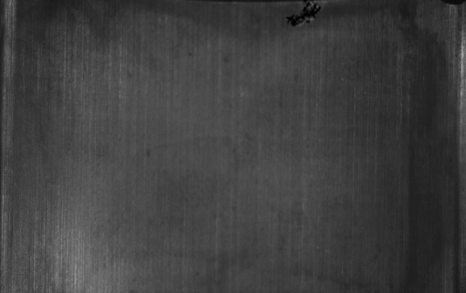
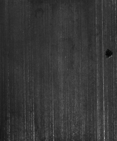
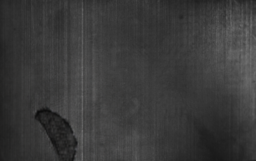
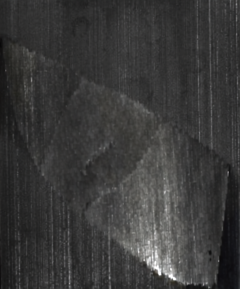
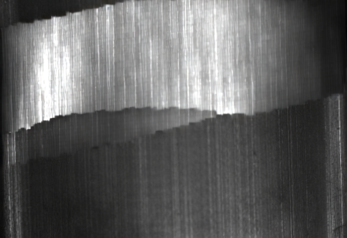
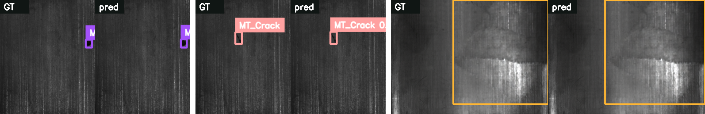
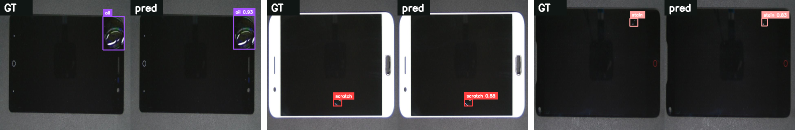
Same 80.6 GB upload: failed at 40% after 26 min — NoSuchUpload on every multi-GB file, progress regressing, stopped by the 1 h timeout. Bucket also lost on every reboot.
Identical upload: completed in 22:40 at 63.6 MB/s average (peaks 305 MB/s), zero multipart errors, data durable on the host's 1 TB volume across reboots.